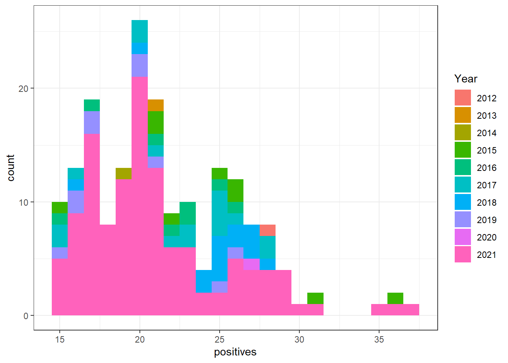
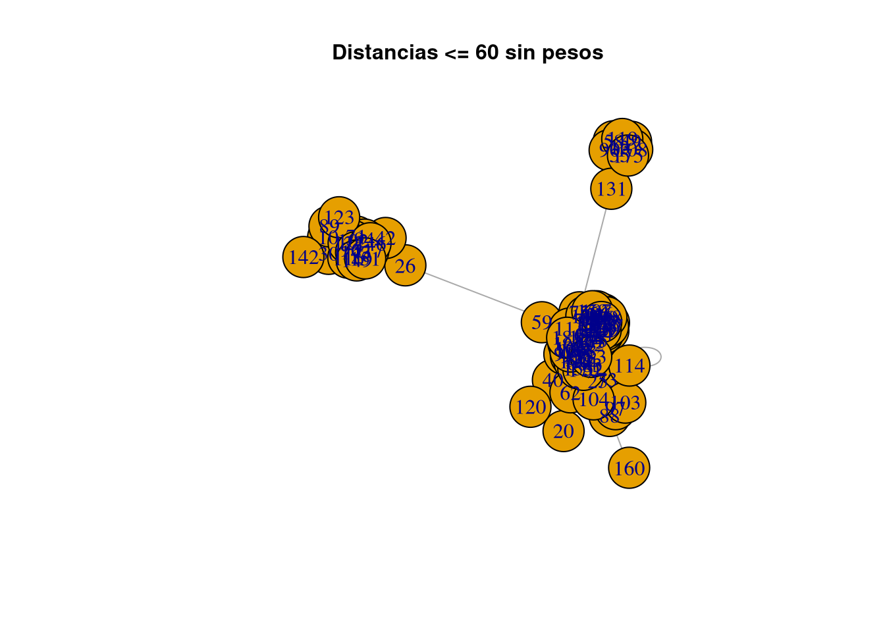

Chapter 2 Analizando el ssdeep
Las funciones hash como MD5, SHA256 o otras son útiles si queremos verificar la integridad de un archivo, su principio fundamental es que un pequeño cambio en el archivo (del orden de unos pocos bits) cambia la salida drásticamente.
En nuestro caso si queremos encontrar similitud entre malware no podemos usar esas funciones, porque si sabemos que un archivo es peligroso y tenemos su hash calculado, con cambiar un bit de ese archivo ya no lo podríamos detectar.
Por ello existe el programa ssdeep, que permite observar pequeñas diferencias entre archivos calculando el CTPH (parecido al hash).
Tenemos tres programas de ejemplo escritos en C, y queremos ver en qué porcentaje se parecen.
2.2 sample2.c
#include <stdio.h>
int main(int argc, char *argv[]) {
for (int i = 0; i < 100; i++) {
if (i%2 == 0) {
i = i + 1;
}
}
return 0;
}2.3 sample3.c
#include <stdio.h>
void main() {
int a = 5;
printf (“Hello World: %d\n”, a);
}Ahora calculamos y comparamos el ssdeep de los tres programas:
$ ssdeep -s * > sample_ctph.ssd
$ ssdeep -m sample_ctph.ssd -s *Obtenemos lo siguiente:
$ sample1 matches sample_ctph.ssd:/home/samuel/Documentos/LCC/pruebas/sample1 (100)
$ sample1 matches sample_ctph.ssd:/home/samuel/Documentos/LCC/pruebas/sample2 (63)
$ sample1 matches sample_ctph.ssd:/home/samuel/Documentos/LCC/pruebas/sample3 (80)sample1.c es mucho más parecido a sample3.c (en un 80%, mientras que solo un 63% con sample2.c).
2.4 Analizando los json
Primero cargamos el directorio Android y el dataframe preprocesado.
path <- "~/Documentos/LCC/ProyectoVT/Proyecto/Android2/"
nombres_ficheros <- list.files(path)
df <- read_csv("~/Documentos/LCC/ProyectoVT/Proyecto/virusTotal.csv")## New names:
## Rows: 183 Columns: 10
## ── Column specification
## ──────────────────────────────────────────────────────── Delimiter: "," chr
## (2): submission.submitter_country, additional_info.exiftool.FileType dbl (6):
## ...1, total, size, times_submitted, positives, Year dttm (2): scan_date,
## first_seen
## ℹ Use `spec()` to retrieve the full column specification for this data. ℹ
## Specify the column types or set `show_col_types = FALSE` to quiet this message.
## • `` -> `...1`#df_deep <- read.csv("~/Documentos/LCC/ProyectoVT/Proyecto/analisis_ssdeep.csv")Para analizar nuestros json, escribimos primero la siguiente función que para cada archivo saca su sdeep y crea un dataframe:
# Entrada: json
# Salida: dataframe
get_ssdeep <- function(x) {
json <- read_json(x)
res <- json %>% gather_object() %>% filter(name == 'ssdeep') %>% as.data.frame()
return (res)
}
# Por cada archivo en la carpeta Android
# coge su ssdeep y los guarda en un dataframe
df_deep <- data.frame()
for (i in nombres_ficheros) {
df_deep <- rbind(df_deep, get_ssdeep(paste0(path,i)))
}
# Limpia el dataframe
df_deep <- df_deep %>% select(..JSON)
colnames(df_deep) <- ('ssdeep')Leemos los dataframes, df_deep contiene los hashes CTPH:
# Coge los virus cuya distancia (parecido)
# en sus ssdeep sea menor que 2
# y los guarda en *indices*
indices <- c()
for (i in 1:nrow(df_deep)) {
for (j in (i+1):nrow(df_deep)) {
if ( adist(df_deep[i,], df_deep[j,]) == 1) {
indices <- c(indices, i,j)
}
}
}2.4.1 Matriz de adyacencias
Creamos una matriz de adyacencias con todos los json, donde la posicion Mij = 1 si la distancia entre los hashes del archivo i y el 1 es igual a uno.
n <- nrow(df)
Mat <- matrix(0, nrow = n, ncol = n)
colnames(Mat) <- c(1:n)
row.names(Mat) <- c(1:n)
j <- 1
while(j < length(indices)) {
Mat[indices[j], indices[j+1]] <- 1
j <- j+2
}Ahora juntamos todo en la siguiente función:
# Entrada: distancia entre dos json
# Salida: Grafo=(V,E)
# V = json
# E = conexiones entre json con sus distancias como pesos
get_adj_matrix <- function(distancia) {
indices <- c()
distancias <- c()
for (i in 1:nrow(df_deep)) {
for (j in (i+1):nrow(df_deep)) {
if ( adist(df_deep[i,], df_deep[j,]) <= distancia) {
indices <- c(indices, i,j)
distancias <- c(distancias, adist(df_deep[i,], df_deep[j,]))
}
}
}
n <- nrow(df)
Mat <- matrix(0, nrow = n, ncol = n)
colnames(Mat) <- c(1:n)
row.names(Mat) <- c(1:n)
j <- 1
while(j < length(indices)) {
Mat[indices[j], indices[j+1]] <- 1
j <- j+2
}
G <- graph_from_adjacency_matrix(Mat, mode = 'undirected')
G <- set_edge_attr(G, 'dist', value=distancias)
return(G)
}2.4.2 Grafos
Dibujamos el siguiente grafo donde los vértices indican el json y las aristas su simulitud. Esto quiere decir que, por ejemplo, el grupo 147, 153 y 46 comparte gran parte de código.
G <- get_adj_matrix(1)
Isolated = which(degree(G)==0)
G2 = delete.vertices(G, Isolated)
plot(G2, vertex.color='#ADD8E6',
edge.curved = .1,
vertex.size=20,
edge.label=E(G2)$dist,
vertex.frame.color = NA,
layout=layout_nicely
)
title("Distancias <= 2",cex.main=1,col.main="Black")
2.5 Componentes del grafo
Dibujamos las componentes del grafo con distancias menores o iguales que diez.
G <- get_adj_matrix(10)
c <- components(G)
biggest <- which.max(c$csize)
vids <- V(G)[c$membership==biggest]
plot(induced_subgraph(G, vids), edge.label=E(G)$dist)
title("Distancias <= 10 con pesos",cex.main=1,col.main="Black")
plot(induced_subgraph(G, vids), vertex.size=25)
title("Distancias <= 10 sin pesos",cex.main=1,col.main="Black")
plot(induced_subgraph(G, vids),vertex.size = 10, vertex.color = "blue", vertex.frame.color = '#123456', vertex.label.cex = .7, vertex.label = NA, edge.curved = .5, edge.arrow.size = .3, edge.width = .7)
title("Distancias <= 10",cex.main=1,col.main="Black")
2.6 Comparación del mayor componente
Todos los archivos tienen el mismo tamaño, subidos desde California en menos de una hora. Con una media de 20 positivos, probablemente sean el mismo archivo.
v <- as(vids, 'vector')
compare <- data.frame()
for (i in v) {
compare <- rbind(compare, df[i,])
}
compare %>% select(size) %>% unique()## # A tibble: 1 × 1
## size
## <dbl>
## 1 2669106compare %>% select(submission.submitter_country) %>% unique()## # A tibble: 1 × 1
## submission.submitter_country
## <chr>
## 1 CAtimes <- compare %>% select(first_seen, scan_date) %>%
mutate(first_seen = gsub('20[0-9]{2}-[0-9]+-[0-9]+', '', first_seen), scan_date = gsub('20[0-9]{2}-[0-9]+-[0-9]+', '', scan_date))
lapply(times[,1], max)## $first_seen
## [1] " 00:46:00"lapply(times[,1], min)## $first_seen
## [1] " 00:19:22"# Media
compare %>% select(positives) %>% lapply(., mean)## $positives
## [1] 19.85185# Desviación típica
compare %>% select(positives) %>% lapply(., sd)## $positives
## [1] 1.6101532.7 Analizando los resultados de los antivirus
Vamos a ver qué resultado da cada antivirus a los json (vértices) del grafo anterior. Si dos antivirus dan el mismo resultado en archivos diferentes que sabemos que son casi iguales es probable que compartan motor.
La siguiente función recorre el directorio del dataset y crea un dataframe con los antivirus.
# Entrada: Ruta al fichero
# Salida: Dataframe con resultados de los AV
get_results <- function(json) {
json_data <- tidyjson::read_json(json)
df_temp <- json_data %>%
gather_object() %>%
filter(name=='scans') %>%
spread_all() %>%
gather_object() %>%
select(ends_with('result')) %>%
.[1,] %>%
select(-last_col())
return(df_temp)
}vids tiene los vértices de los grafos calculados. Pasamos los nombres a formato numérico con ceros a la izquierda.
ficheros <- sapply(vids, function(x) paste0(sprintf("%04d", x), '.json') )Creamos un dataframe y, por cada vértice, cogemos los escáneres.
df_results <- data.frame()
for (i in ficheros) {
df_results <- rbind.fill(df_results, get_results(paste0(path,i)))
}
write.csv(df_results, "~/Documentos/LCC/ProyectoVT/Proyecto/escaneres.csv")Leemos y limpiamos el dataframe.
df_results <- read_csv("~/Documentos/LCC/ProyectoVT/Proyecto/escaneres.csv")## New names:
## Rows: 27 Columns: 62
## ── Column specification
## ──────────────────────────────────────────────────────── Delimiter: "," chr
## (23): Lionic, CAT-QuickHeal, McAfee, K7GW, Trustlook, SymantecMobileInsi... dbl
## (1): ...1 lgl (38): Bkav, MicroWorld-eScan, CMC, Malwarebytes, VIPRE, Sangfor,
## K7AntiV...
## ℹ Use `spec()` to retrieve the full column specification for this data. ℹ
## Specify the column types or set `show_col_types = FALSE` to quiet this message.
## • `` -> `...1`#df_results <- df_results %>% select(-..JSON)
colnames(df_results) <- lapply(colnames(df_results), function(x) gsub('.result', '', x))Si seleccionamos los AV Kasperky y ZoneAlarm se observa fácilmente que los resultados son idénticos y seguramente compartan el mismo motor.
df_results %>% select(Kaspersky, ZoneAlarm)## # A tibble: 27 × 2
## Kaspersky ZoneAlarm
## <chr> <chr>
## 1 not-a-virus:HEUR:AdWare.AndroidOS.Ewind.kp <NA>
## 2 not-a-virus:UDS:AdWare.AndroidOS.Ewind.kp not-a-virus:HEUR:AdWare.AndroidOS…
## 3 not-a-virus:HEUR:AdWare.AndroidOS.Ewind.kp <NA>
## 4 not-a-virus:HEUR:AdWare.AndroidOS.Ewind.kp not-a-virus:HEUR:AdWare.AndroidOS…
## 5 not-a-virus:UDS:AdWare.AndroidOS.Ewind.kp <NA>
## 6 not-a-virus:HEUR:AdWare.AndroidOS.Ewind.kp <NA>
## 7 <NA> <NA>
## 8 not-a-virus:HEUR:AdWare.AndroidOS.Ewind.kp not-a-virus:HEUR:AdWare.AndroidOS…
## 9 not-a-virus:HEUR:AdWare.AndroidOS.Ewind.kp not-a-virus:HEUR:AdWare.AndroidOS…
## 10 not-a-virus:HEUR:AdWare.AndroidOS.Ewind.kp <NA>
## # … with 17 more rowsMcAfee y McAfee GW Edition, normal porque ambos son de McAfee
df_results %>% select(McAfee, `McAfee-GW-Edition`)## # A tibble: 27 × 2
## McAfee `McAfee-GW-Edition`
## <chr> <chr>
## 1 Artemis!919A1900C529 Artemis
## 2 Artemis!919A1900C529 Artemis
## 3 Artemis!919A1900C529 Artemis
## 4 Artemis!919A1900C529 Artemis
## 5 Artemis!919A1900C529 Artemis
## 6 Artemis!919A1900C529 Artemis
## 7 Artemis!919A1900C529 Artemis
## 8 <NA> <NA>
## 9 Artemis!919A1900C529 Artemis
## 10 Artemis!919A1900C529 Artemis
## # … with 17 more rows